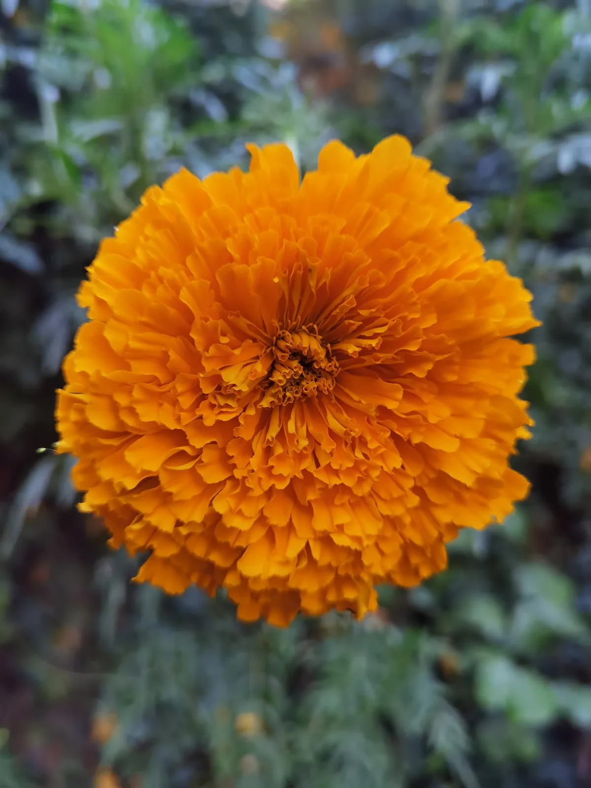

EL CUESTIONAMIENTO
A LO NATURAL
Memoria y conciencia de la ausencia: la búsqueda de sentido ante la muerte
ESCRITO POR: NKS


El ser humano busca darle sentido a la muerte desde que aprendió a crear para sobrevivir, a cuidar para preservar la vida y a perder aquello que no pudo proteger. En los restos de nuestros antepasados encontramos huellas de heridas graves que lograron sanar. Detrás de esa supervivencia pudo haber alguien que los cuidó y acompañó. La evolución desarrolló nuestras capacidades para sobrevivir, mientras que la conciencia transformó nuestra manera de comprender la existencia. Aprendimos a proteger la vida, pero no a impedir la muerte. De esa contradicción surge una de las grandes inquietudes de nuestra existencia: la necesidad de darle sentido a aquello que sabemos inevitable.
La muerte forma parte del ciclo natural de la vida. Podemos describir sus causas, estudiar sus procesos y reconocer su inevitabilidad. Sin embargo, entenderla biológicamente no significa comprender todo lo que provoca en nosotros. La muerte nos cuesta aceptarla porque somos conscientes de su irreversibilidad. No cuestionamos que exista; cuestionamos lo que su existencia hace con nuestra vida.
El temor a morir y la inquietud de perder a alguien no son exactamente lo mismo. En uno reconocemos nuestra propia vulnerabilidad; en el otro, la fragilidad de quienes forman parte de nuestra existencia. Perder a una persona interrumpe conversaciones, costumbres, proyectos y vínculos que habían adquirido un lugar en nuestra vida cotidiana.
La muerte es un acontecimiento natural; la ausencia, una experiencia emocional.
Toca las fotografías para mirarlas de cerca.
Lo que sabemos acerca de la primera no siempre alcanza para asimilar la segunda. Nuestra manera de experimentar esa ausencia está relacionada con la conciencia: recordamos lo vivido, anticipamos lo que podría ocurrir y reconocemos que algunas posibilidades han desaparecido. La muerte ocurre sin que necesitemos comprenderla. Su significado, en cambio, se transforma con nuestra capacidad de pensar en aquello que ya no está y en lo que no volverá a suceder. Lo natural no siempre resulta emocionalmente aceptable.
Durante mucho tiempo se ha destacado la conciencia de la propia mortalidad como uno de los rasgos distintivos del ser humano. Pero reducir la experiencia de la pérdida a nuestra especie dejaría fuera comportamientos observados en otros animales. Elefantes que permanecen cerca de individuos muertos o moribundos, primates que transportan durante un tiempo a sus crías fallecidas y orcas que han sido observadas sosteniendo los cuerpos de sus crías muestran que ciertos vínculos pueden seguir influyendo en la conducta después de una muerte.
Esos comportamientos no nos permiten conocer con certeza qué sienten los animales ni si comprenden la irreversibilidad del mismo modo que nosotros. Observar una reacción no equivale a tener acceso a la experiencia interior de quien la manifiesta. Sin embargo, tampoco sería razonable negar la importancia de sus vínculos porque no podamos traducirlos a palabras humanas.
La pérdida de un compañero puede modificar rutinas y comportamientos sin que exista una explicación consciente y verbal sobre lo sucedido.
Toca las fotografías para mirarlas de cerca.
La historia de Hachikō conserva esa inquietud. El perro japonés acostumbraba esperar a su dueño, el profesor Hidesaburō Ueno, en la estación de Shibuya, en Tokio. Cuando el profesor murió, en mayo de 1925, Hachikō continuó acudiendo al lugar. Su rutina se prolongó durante casi diez años, hasta su propia muerte en marzo de 1935. Su historia se volvió un símbolo de fidelidad, aunque no podamos afirmar qué significado atribuía el animal a la ausencia de su dueño.
En octubre de 2026 también se difundió la historia de Martín, un gallo que, según testimonios locales, llevaba años permaneciendo cerca de un hospital oncológico de Santa Cruz de la Sierra, Bolivia, adonde habría llegado con su cuidador antes de que este falleciera. El relato hablaba de una permanencia aproximada de ocho años y de personas que lo alimentaban y protegían. Es un caso que requiere distinguir lo documentado de la interpretación popular, pero que despierta una pregunta semejante a la de Hachikō: qué permanece de un vínculo cuando desaparece uno de sus integrantes.
Las investigaciones sobre animales que han perdido a sus compañeros han identificado cambios en su comportamiento, descanso y alimentación, así como conductas de búsqueda. Estas respuestas pueden relacionarse con la separación o el duelo, aunque no demuestran que experimenten la muerte de la misma manera que nosotros. La ausencia puede manifestarse sin que necesariamente exista una explicación sobre ella.
En el ser humano, la conciencia añade otra dimensión a la pérdida: no solo recordamos a quien ya no está, también podemos imaginar un futuro marcado por su ausencia. Nuestra capacidad de anticipar, cuestionar y buscar significado transforma nuestra relación con la muerte, sin que ello implique negar estas capacidades, a otras especies.
Nuestra relación con la fragilidad de la vida también puede observarse en los restos de nuestros antepasados y parientes evolutivos. En distintos yacimientos se han encontrado huesos con señales de lesiones que sanaron y personas que sobrevivieron durante largos periodos con limitaciones físicas. Esos hallazgos permiten estudiar las condiciones de supervivencia y considerar la posible intervención de otros miembros del grupo.
Uno de los ejemplos más conocidos es Shanidar 1, un neandertal cuyos restos fueron descubiertos en una cueva del actual Irak. Presentaba lesiones y condiciones físicas que habían afectado su cuerpo durante años.
Su supervivencia plantea una posibilidad significativa: que otros miembros de su grupo contribuyeran a sostener su vida. Aunque sus restos no permiten determinar qué cuidados recibió, ofrecen elementos para reflexionar sobre la cooperación y el acompañamiento entre nuestros antepasados.
Una herida sanada demuestra que alguien sobrevivió; no necesariamente que lo hizo solo. En esa posibilidad encontramos algo más que la recuperación de un cuerpo: la importancia que pudo tener el cuidado en nuestras primeras relaciones sociales.
Cuidar a alguien no requiere necesariamente una teoría sobre la mortalidad. Puede ser una respuesta a la necesidad, al vínculo o a la cooperación que permite sostener al grupo. Pero en ese acto también se reconoce la fragilidad de otra vida.
Aprender a cuidar una vida también puede significar reconocer cuánto importa su pérdida.
Toca las fotografías para mirarlas de cerca.
La supervivencia individual deja de ser una experiencia aislada cuando depende, en alguna medida, de quienes la rodean. De ahí nace una relación posible entre protección y ausencia. Cuando alguien forma parte de la vida cotidiana de un grupo, su desaparición modifica las relaciones que lo sostenían. Aprendimos a cuidar, proteger y acompañar para preservar la vida; esos mismos vínculos pueden hacer que la muerte deje de sentirse como un acontecimiento distante. Donde hubo protección pudo haber un vínculo, y donde hubo un vínculo la muerte pudo convertirse en ausencia.
Los huesos sanados no conservan las emociones de quienes estuvieron alrededor. No sabemos cuándo nuestros antepasados comenzaron a comprender la muerte ni podemos establecer que el cuidado haya precedido históricamente a esa comprensión. Aun así, en la huella de una herida sanada aparece una posibilidad significativa: que alguien no hubiera estado solo durante su sufrimiento.
El cuidado no derrota la muerte; transforma nuestra relación con la vulnerabilidad de quienes nos rodean.
Toca las fotografías para mirarlas de cerca.
La búsqueda de sentido ante la muerte pudo encontrar parte de sus raíces en el reconocimiento de la fragilidad de la vida. Lo que sí podemos observar es que, con el tiempo, las sociedades desarrollaron formas cada vez más complejas de relacionarse con sus muertos. La muerte adquirió un lugar dentro de las creencias, las ceremonias y la vida comunitaria.
En el antiguo Egipto, la preparación y conservación del cuerpo, los ajuares funerarios y las ofrendas respondían a concepciones sobre la continuidad de la existencia después de morir. Los alimentos, bebidas, objetos e imágenes formaban parte de un sistema ritual que buscaba atender las necesidades de los difuntos en el más allá. La muerte no se concebía únicamente como un final biológico, sino dentro de un orden religioso que articulaba lo que se esperaba de la existencia posterior.
Entre los mexicas, el destino de los fallecidos se relacionaba, entre otros factores, con la manera en que habían muerto. Sus ceremonias, ofrendas y concepciones sobre los distintos destinos de los muertos expresaban una cosmovisión diferente de la egipcia. Ambas sociedades, sin embargo, incorporaron la muerte a prácticas que organizaban la relación entre los vivos, los difuntos y sus creencias. No se trataba solo de tristeza: había deberes religiosos, vínculos comunitarios, explicaciones del mundo y maneras de representar la continuidad de la existencia.
Las creencias ofrecían relatos sobre lo que podía ocurrir después de la muerte; los rituales convertían esas interpretaciones en actos compartidos. Así, una pérdida individual podía adquirir un significado dentro de la memoria colectiva. El ritual no siempre responde a una pregunta ni resuelve una emoción.
A veces ofrece un lugar donde la ausencia puede ser nombrada, representada y acompañada.
Toca las fotografías para mirarlas de cerca.
En México, las ofrendas del Día de Muertos expresan parte de esa relación. Su forma contemporánea se construyó mediante la confluencia de tradiciones mesoamericanas, prácticas cristianas y transformaciones culturales posteriores. Las flores, las velas, los alimentos, las fotografías y el papel picado pueden responder a creencias religiosas, costumbres familiares o una intención íntima de recordar a alguien. Un mismo objeto puede tener varios significados para quienes lo colocan.
Las ofrendas muestran cómo podemos conceder una presencia simbólica a quien ya no está físicamente. Una fotografía no devuelve un rostro, pero conserva su imagen; un alimento recuerda una costumbre; una vela puede formar parte de una ceremonia y de una memoria familiar al mismo tiempo. Sin embargo, ninguna creencia o ritual elimina necesariamente el dolor de la ausencia. La capacidad de darle un lugar a la muerte no impide que continuemos cuestionándola.
Ese cuestionamiento revela una contradicción de nuestra conciencia. Somos capaces de comprender que morir es parte de la vida y, al mismo tiempo, recordar a alguien que hemos perdido e imaginar todo aquello en lo que seguirá faltando. Entendemos un hecho, pero seguimos viviendo sus consecuencias. A esa experiencia podemos acercarnos mediante una expresión:
La condena de la conciencia.
Toca las fotografías para mirarlas de cerca.
La expresión no pretende afirmar que pensar sea una condena ni que toda persona viva la muerte de la misma manera. Señala un aspecto de nuestra experiencia: ser conscientes nos permite recordar, anticipar y reconocer lo irreversible. La misma capacidad con la que interpretamos la existencia puede volver persistente una ausencia. Comprender algo con la razón no garantiza que podamos asimilarlo emocionalmente.
La infancia permite observar esa distancia entre experimentar una pérdida y comprender su permanencia. Un niño puede sentir dolor por alguien que ya no está, aunque su comprensión de la muerte cambie con el desarrollo. Reconocer una ausencia inmediata no es idéntico a entender que esa persona no regresará. Con el tiempo, la irreversibilidad empieza a formar parte de aquello que el niño es capaz de imaginar.
Una cosa es comprender que alguien no está y otra reconocer que nunca volverá. La palabra «nunca» no altera lo ocurrido, pero le da una dimensión temporal. Ya no se trata solo de la ausencia de hoy: también estará en los días, los años y los acontecimientos que aún no llegan. Nunca volver a escuchar cierta voz, compartir una conversación o encontrarnos con alguien de la misma manera en que solíamos hacerlo. Esa conciencia puede convertir un hecho pasado en una presencia constante dentro del pensamiento.
Recordamos cómo era una persona y, al mismo tiempo, comprendemos que ya no podremos mostrarle aquello en lo que nos estamos convirtiendo. Seguimos cambiando, aprendiendo, tomando decisiones y descubriendo lugares, mientras la posibilidad de compartir esos cambios con quien murió se ha interrumpido.
El recuerdo conserva lo que existió, pero también ilumina aquello que ya no podrá suceder.
Toca las fotografías para mirarlas de cerca.
La conciencia convierte una ausencia presente en la idea de una ausencia prolongada. Y, sin embargo, esa misma conciencia nos permite reconocer el valor de la relación que tuvimos. Nos devuelve palabras, momentos y afectos que siguen formando parte de nuestra identidad.
El recuerdo conserva lo vivido; la imaginación nos permite proyectarnos hacia lo que sigue. Cuando alguien muere, ambas capacidades amplían nuestra conciencia de la ausencia. No solo extrañamos una presencia: también reconocemos la pérdida de encuentros que todavía no habían ocurrido.
Podemos saber que alguien no regresará y aun así encontrarlo en una canción, una fotografía, una calle o una costumbre. No significa que la muerte haya sido revertida ni que el recuerdo sustituya a la persona. Significa que las experiencias compartidas continúan teniendo efectos en quienes permanecemos. La conciencia que vuelve dolorosa la pérdida también hace posible conservar su significado.
La necesidad de comprender puede volverse intensa cuando buscamos una explicación para una muerte. Conocer sus causas no equivale a encontrar una respuesta emocional. De ahí que la búsqueda de sentido pueda convertirse en una fuente adicional de sufrimiento. Nuestra conciencia nos permite distinguir causas y consecuencias; también puede mantenernos alrededor de preguntas para las que quizá no exista una respuesta satisfactoria.
Reconocer que algo es irreversible no elimina el deseo de que hubiera sido diferente. Aceptar lo ocurrido y continuar preguntándonos por qué sucedió pueden ser experiencias simultáneas.
Hay una diferencia importante entre encontrar significado y encontrar justificación. Comprender una pérdida no obliga a interpretarla como necesaria. No toda muerte tiene que convertirse en una enseñanza, ni todo dolor debe adquirir valor porque supuestamente nos transforma. Es posible reconocer lo que alguien significó sin considerar que su ausencia tenía que ocurrir. La necesidad de darle sentido a lo vivido no exige convertir el sufrimiento en un destino. Esa distinción también aparece al hablar de aceptación y resignación.
Aceptar una realidad no significa que deje de doler.
Toca las fotografías para mirarlas de cerca.
La aceptación supone reconocer lo ocurrido sin renunciar necesariamente a decidir cómo continuar. La resignación, en cambio, puede surgir cuando dejamos de considerar otras posibilidades y nos acostumbramos a pensar que nada puede cambiar, ni siquiera nuestra relación con lo sucedido.
Desde fuera, ambas experiencias pueden parecer iguales. Una persona puede continuar con sus actividades, mostrarse serena y conservar un dolor que los demás no advierten. Tampoco la permanencia de ese dolor demuestra que no haya aceptado la pérdida. Comprender lo irreversible no nos vuelve inmunes al deseo de que hubiera sido distinto. El duelo no tiene una medida única ni se resuelve necesariamente cuando deja de ser visible.
El miedo también interviene en la manera en que vivimos con aquello que nos ha marcado. No siempre señala cuánto hemos avanzado o qué tan estancados estamos; a veces muestra lo que todavía nos afecta. Puede actuar como una respuesta de protección y ayudarnos a reconocer ciertos límites.
La incertidumbre presenta otra tensión. A veces deseamos una respuesta más de lo que tememos lo que podríamos descubrir. La curiosidad puede llevarnos a buscar información que no necesitamos para continuar, incluso cuando sabemos que podría hacernos daño. Obtener certeza no equivale necesariamente a encontrar tranquilidad. El miedo puede funcionar como un escudo; la necesidad de saber puede impulsarnos a cruzarlo. En ocasiones, buscar una explicación es también una forma de intentar recuperar el control sobre aquello que ya no podemos cambiar.
No todas las preguntas necesitan una respuesta para que podamos continuar viviendo. Esto no significa abandonar el pensamiento, sino reconocer que hay diferencias entre saber, comprender y aceptar. Nuestra conciencia puede acercarnos a una explicación y, aun así, dejar intacta la emoción. Aprender a vivir con la ausencia también supone admitir los límites de aquello que podemos conocer. El recuerdo, además, no permanece inmóvil.
Las fechas y los lugares son los mismos, pero cambia el significado.
Toca las fotografías para mirarlas de cerca.
Un día que antes evocaba una pérdida puede convertirse también en el comienzo de otra experiencia. Regresar a una calle o a un espacio conocido puede revelar no tanto una transformación del sitio como de quien vuelve a recorrerlo.
Los acontecimientos del pasado no desaparecen, pero nuestra manera de relacionarnos con ellos puede cambiar. Una fecha puede reunir recuerdos distintos y un lugar adquirir nuevos significados sin perder su historia. La ausencia también puede cambiar el lugar que ocupa en nuestra vida, sin dejar de formar parte de ella. La memoria no solo conserva lo vivido; también participa en la manera en que seguimos viviendo. Quizá por eso algunos recuerdos buscan expresarse mediante objetos y acciones.
La ofrenda del Día de Muertos reúne ambas cosas. Flores, fotografías, velas, papel picado, bebidas y alimentos componen una escena llena de color. Es fácil reconocer su belleza sin detenerse en lo que puede haber detrás de ella: el recuerdo de alguien cuya ausencia preferiríamos no haber conocido.
Preparar una ofrenda implica pensar en quien falta. Se eligen retratos, se buscan ciertos alimentos, se acomodan objetos, se deciden colores y lugares. La preparación puede ser agradable y, al mismo tiempo, estar acompañada por una tristeza difícil de nombrar. Construimos algo hermoso a partir de una pérdida que nunca hubiéramos querido experimentar. La belleza de la ceremonia no elimina el dolor que puede haber en su origen.
En esto aparece una diferencia íntima respecto de otras celebraciones. En Navidad, por mucho que adornemos una casa, instalemos luces o coloquemos un árbol, no podemos obligarnos a sentir el espíritu navideño. La cantidad de adornos no crea por sí misma la emoción que asociamos con esa fecha. En una ofrenda, en cambio, cada objeto puede colocarse precisamente porque existe una intención vinculada al recuerdo y a la ausencia.
No importa el tamaño de una ofrenda ni la cantidad de elementos que la conforman, sino el sentimiento con el que se prepara. Una fotografía, una vela o el alimento favorito de alguien pueden representar años de convivencia y recuerdos compartidos. Su valor no está en la abundancia de la decoración, sino en lo que significa colocar cada elemento.
La ofrenda puede ser una expresión de duelo, una celebración de la memoria y una manera de dar continuidad a una tradición. También puede expresar una necesidad que va más allá de seguir cuidando simbólicamente a quien murió. En ella existe la intención de decir algo: recordar, agradecer, extrañar, nombrar a quien falta.
La ofrenda es una forma de darle sentido a lo natural.
Toca las fotografías para mirarlas de cerca.
No devuelve a nadie, pero permite reconocer que una ausencia continúa teniendo un lugar en nuestra vida. Hasta el pan de muerto ofrece una imagen de esa contradicción. Su aroma, su textura suave y su sabor dulce forman parte de una celebración que puede estar atravesada por la tristeza. La dulzura llega en medio de una experiencia capaz de dejar un sabor amargo. Tal vez el pan de muerto sea, por un instante, una manera de quitarle algo de lo amargo a la vida.
La tristeza y el disfrute no tienen por qué anularse. Podemos recordar a alguien con dolor y, al mismo tiempo, disfrutar una comida, sonreír ante una fotografía o reconocer la alegría de lo que compartimos. La ofrenda no niega la ausencia: la reconoce, la nombra y la incorpora a la vida cotidiana. A través de ella, lo que parecía imposible de expresar encuentra una forma, aunque esa forma no alcance para explicar por completo la muerte.
El duelo tampoco se mide por la cantidad de rituales ni por el tiempo que haya pasado. Hay pérdidas que vuelven a sentirse intensamente después de años; hay recuerdos que cambian de significado y otros que permanecen. Aceptar que alguien no volverá no significa renunciar a pensar en esa persona. El recuerdo puede formar parte de nuestra manera de vivir con lo irreversible sin convertirse en una negación de lo ocurrido.
El valor de la ausencia no consiste en afirmar que la muerte fue necesaria para enseñarnos algo. Consiste, más bien, en reconocer lo que una vida significó mientras estuvo presente y lo que continúa dejando en quienes la recuerdan.
La muerte no necesita tener una justificación para que una vida haya tenido valor.
Toca las fotografías para mirarlas de cerca.
Al final, quizá no buscamos una explicación definitiva de la muerte, sino una manera de convivir con aquello que no podemos cambiar. La conciencia nos permite reconocer la irreversibilidad, pero también conservar la memoria, transformar el significado de los recuerdos y seguir construyendo nuestra vida alrededor de lo que permanece.
Entre flores, fotografías, alimentos y papel picado, una ofrenda vuelve visible esa tensión. Es hermosa, y puede estar hecha desde el dolor, y la fe. Cada objeto recuerda una vida que ya no puede recuperarse de la misma manera; cada gesto expresa que su ausencia todavía significa algo. La muerte permanece como un acontecimiento natural. Lo que hacemos con su recuerdo forma parte de nuestra manera de comprender la vida y de entender la naturaleza humana.
Dedicado a: Marcos Arturo Sánchez Cortés
Es fácil recordar cuando jamás se olvida...
Te quiero cabronamente